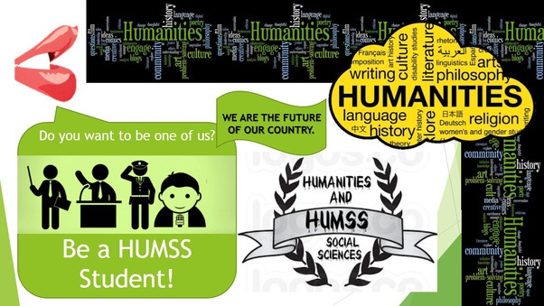
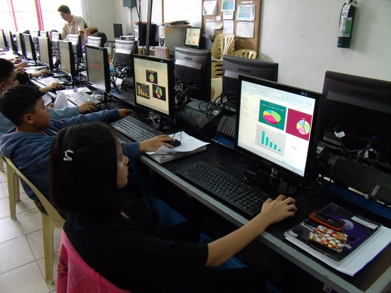

| STEM Science, Technology, Engineeri and Mathematics Strand (STEM) Science, Technology, Engineering, and Mathematics are intertwining disciplines when applied in the real world. |
 |
| HUMMS HUMSS or The Humanities and Social Sciences strand is one of the academic tracks of senior high school in the Philippines. This strand focuses on oral communication, media and information, and enhancing your reading and writing skills. There is a lot of research and presentation involved in this strand too. |
 |
| ABM The ABM strand in its most fundamental sense refers to the accountancy, business, and management academic programs that concentrate on the foundational concepts in corporate operations, financial management, business management, as well as each and every factor that revolves around those central fields. |
| TECH VOC In TECH VOC there are four courses the Information and Communications Technology Strand,Home Economics Strand,Industrial Arts Strand, and Agri-Fishery Arts Strand. |
 |